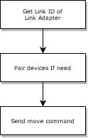
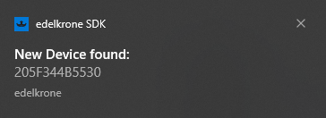
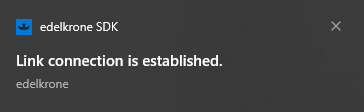

Link Adapter provides communication with three types of connection. These are; Wireless RJ45 Canbus Each connection type has a specific connection, pairing, and method of motion.
You can manage your device(s) by following the image below.

Each Link Adapter has a unique link id, with a length of 12 characters.
for example;
205F344B5530
All commands need this Link ID.
Wireless
The wireless connection does not need another physical connection except a connection between Link Adapter and the PC.
| Supported Connection Type | Supported Device | Supported Move Type | Supported Real-Time Axis | Description |
|---|---|---|---|---|
|
All Devices |
|
- | - |
|
Head Plus |
|
- | - |
|
HeadPlus Pro v2 |
|
- | - |
Pairing
Pairing is completed via Link Adapter using API commands.
Calibration and Limits
Motion Control
Link Adapter supports three two types of movement;
Limitations
- Wireless connection does not support Real-Time movement.
- If there is much wifi or electromagnetic signal in the working environment, that noise can affect the connection.
RJ45
The connection is established with a patch cable. The patch cable is plugged into whichever device you want to operate with the Link Adapter.
Pairing
RJ45 connection type does not have a pairing capability. So if you want to control other devices over the master device, you should use the mobile application apps.
Motion Control
RJ45 connection type supports three types of movement;
Limitations
-
There is only one device that can connect via cable.
-
If there are devices paired via wireless except connected with cable, the Real-Time Move only works with the cable-connected device.
More Details About Limitations
Link Connection
The Link connection means that each device is connected via link cable.
| Supported Connection Type | Supported Device | Supported Move Type | Supported Real-Time Axis | Description |
|---|---|---|---|---|
|
All Devices |
|
- | - |
|
Head Plus |
|
- | - |
|
HeadPlus Pro v2 |
|
- | - |
Pairing
Pairing is completed via Link Adapter using API commands.
Calibration and Limits
Motion Control
Link connection type supports three types of movement;
Limitations
Link connection needs to the cable connection between devices. So
How To Control Your Device With Link Adapter
The edelkrone SDK will notify you of each module plugged into the PC.

This notification appears in the notification area of your OS. That notification contains the Link ID of your link module. This ID is also required to distinguish if you have multiple modules when sending commands.
You will then get a notification that the SDK has recognized your module and open a communication channel.

How to get the Link ID of Link Adapter and its status
To control your device, you first need to get the Link ID of the Link Adapter. You can get the Link ID of the Link Adapter.
Get Link Module List and Status Command
You can also use this command to get the status of the other link modules.
How to manage multiple devices
Paired device(s) after completing pairing are called a bundle.
First of all, to manage your devices, you need to create a bundle by pairing your devices and Link Adapter. Or attach your link adapter to an already existing bundle.
The link Adapter has three communication channels. Each channel has its unique pairing methods.
It is explained below how to pair your device according to your chosen channel.
Pairing
1. Pairing with Wireless Channel
Link Adapter can create a bundle from zero or can attach itself to your already created bundle.
To pair your devices with the Link Adapter, you need to know your devices' mac address. To get the mac addresses, you should scan command to the Link Adapter.
You can also find from here more details about that api command.
Warning!!! Please be sure that your devices are energized.
After then the Link Adapter will be gathered the mac addresses from its around.
To get mac addresses from edelkrone SDK, you can use this scan result command.
Now, you have mac addresses of your devices that you want to control. You can create a bundle or attach to already exist a bundle by using the below commands respectively.
"create bundle" command creates a bundle by including itself.
"attach to exist bundle" command to attach to an already existing bundle.
You can follow the pairing status by using the pairing status command when sending a pairing command. You can send move commands when the pairing status is "ok".
2. Pairing with RJ45
The pairing with RJ45 is automatically paired with the connected device via a patch cable. Paired device(s) after completing pairing are called a bundle.
But, you may want to control multiple devices; you need to pair it with the device connected with the Link Adapter. But RJ45 does not have any pairing ability, and the edelkrone SDK does not have any pair command for RJ45; you can use the edelkrone mobile application to pair them.
2. Pairing CanBus
How to get the status of the edelkrone device in the bundle
The bundle status is automatically updated from edelkrone devices when the pairing process is completed.
The status contains paired devices information, supported axis, supported real-time axis, bundle state, axis values of the devices.
You can get the status by using the command status end point.
Send move command to your bundle
There are four types of movement. Except for real-time moves, other movement types can be controlled over HTTP API. But, HTTP has several overheads; therefore, you need to prefer Websocket Protocol to control in real-time.
Also check for limitations.
1. Joystick
This command takes the speed ratio in the axis to be moved and makes it move at that speed in that direction.
This movement supports a five-axis that depends on your bundle.
For example; Your bundle has three axes, for example, pan, tilt, and slide. And you want to send a move command in these three axes.
Just add the axes you want and their speed ratio.
You can also find more details about that api command here
2. Keypose
You can save up to six poses. You can make a loop between these poses, or you can send your bundle from a point you want to a pose you want.
1. Keypose Store Current Pose
When you send this command, a pose will be stored for you with an index number of your bundle at the moment.
You can also find from here more details about that api command.
2. Keypose Store By Numeric Data
Numeric data means that your axis values, which are you want to save as pose.
You can also find from here more details about that api command.
3. Keypose Move with Fixed Duration
You can make your bundle go from any point to a pose you want with this command. But this movement takes place with the fixed duration you give. But movement speed varies according to the given time.
You can also find from here more details about that api command.
4. Keypose Move with Fixed Speed
You can make your bundle go from any point to a pose you want with this command. But this movement takes place with the fixed speed ratio you give. But movement duration varies according to the given speed ratio.
You can also find here more details about that api command.
5. Loop Between Keyposes with Fixed Duration
This command can create loops between the poses you recorded. This movement takes place with the fixed duration you give. But movement speed varies according to the given time.
You can also find more details about that api command here .
5. Loop Between Keyposes with Fixed Speed
With this command, you can create loops between the poses you recorded. This movement takes place with the fixed speed you give. But the duration of the movement varies according to the given speed ratio.
You can also find from more details about that api command here .
6. Read Keypose Numeric Information
With this command, you can read the axis values of the pose you stored. It takes an index as an argument and returns the information that you want.
You can also find more details about that api command here .
7. Delete Keypose
When you store a keypose, it occupies a slot in a keypose list. If you need to add a new keypose, you need to delete keypose.
You can also find from more details about that api command here .
3. Focus Move
You can use it for focus movement when you plug a focus module into your head.
You can also find more details about that api command here .
4. Real-Time Move
The supports Real-Time.
Real-Time movement needs a reliable communication channel. So wireless connection does not support the real-time movement. The HTTP protocol has some overheads.
You can also find more details about that api command here .